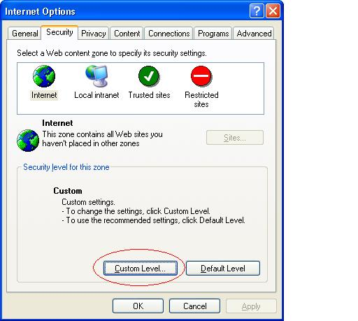
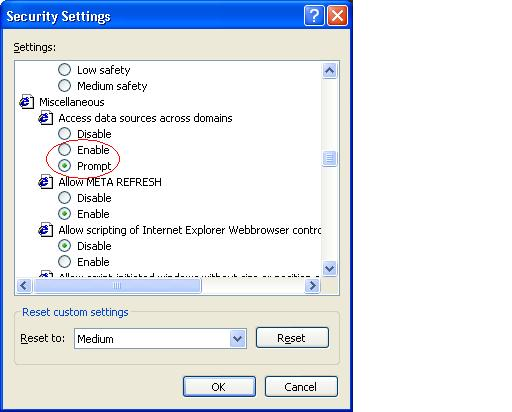

To be able to automatically obtain orbital element data for all objects on the MPC web site, you need to tell Internet Explorer 6 (I am using 6.0.2900) to permit access to data across hosts on the Internet.
Do this by selecting Internet Options... from the
Tools menu in Internet Explorer, then selecting
the Security tab and clicking the
Custom Level... button. Then set Access data
sources across domains in the Miscellaneous
section to Prompt, as shown below.
 |
 |